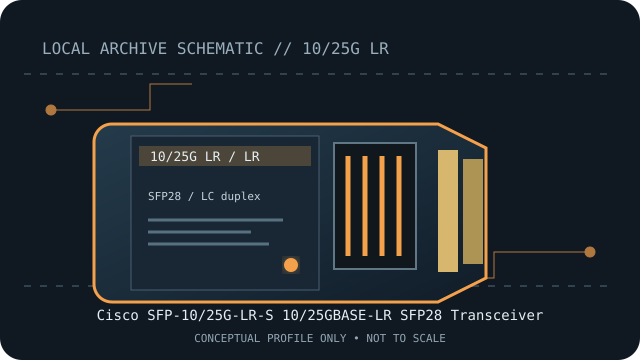

[ MODEL-SPECIFIC NETWORK HARDWARE RECORD ]
Cisco SFP-10/25G-LR-S 10/25GBASE-LR SFP28 Transceiver
Dual-rate long-reach SFP28 optic for single-mode fiber. Exact PID, host qualification and optical channel specifications should be checked before deployment.

IDENTIFICATION: Match the module label, vendor part number and revision to the manufacturer's documentation. Nominal link rate and maximum reach are specifications, not measured throughput or a guarantee for every installed channel.
Model-specific specifications and compatibility
| Subcategory | SFP transceivers: optical and copper |
|---|---|
| Exact product/model | Cisco SFP-10/25G-LR-S 10/25GBASE-LR SFP28 Transceiver |
| Form factor | SFP28, hot-pluggable dual-rate optical module. |
| Optical interface | 10GBASE-LR or 25GBASE-LR, selected by a supported host port; 1310nm over single-mode fiber, with 10km maximum reach. |
| Nominal rate (not measured) | 10Gb/s or 25Gb/s nominal, depending on the qualified host port and configured Ethernet mode. |
| Wavelength and reach | Up to 10km on single-mode fiber at supported LR operation. |
| Connector and fiber type | Duplex LC; 1310nm single-mode fiber (SMF). |
| Host coding and compatibility caveat | Requires an SFP28-capable Cisco interface with support for this exact PID and the intended 10G or 25G mode. At 25GbE, verify the platform’s FEC requirements and port configuration in the Cisco data sheet and TMG matrix; an SFP+ slot or a generic SFP28 cage is not sufficient proof of compatibility. |
| Variant / deployment caveat | LR specifies the single-mode channel and distance; do not connect directly to SR multimode optics. Exact support may differ between Cisco platform families and software releases. |
| Measured throughput | No bench result is claimed. Actual payload throughput depends on the host, link partner, protocol overhead and test method. |
Host qualification and installation notes
Requires an SFP28-capable Cisco interface with support for this exact PID and the intended 10G or 25G mode. At 25GbE, verify the platform’s FEC requirements and port configuration in the Cisco data sheet and TMG matrix; an SFP+ slot or a generic SFP28 cage is not sufficient proof of compatibility.
LR specifies the single-mode channel and distance; do not connect directly to SR multimode optics. Exact support may differ between Cisco platform families and software releases.
Check both endpoint modules, fiber grade, polarity, connector cleanliness and host port configuration. Verify the exact transceiver PID and revision against the current manufacturer compatibility source before placing the link in service.
Archival, ESD and fiber-safety notes
Record the exact PID, hardware revision, host port, firmware/software release and available digital optical diagnostics. Store the module in ESD-safe packaging with dust caps fitted. Never look into an active fiber or transceiver aperture.
Manufacturer sources
- Cisco 25GBASE SFP28 Modules Data SheetCisco specifications for 10/25GBASE-LR SFP28 modules and operating conditions.
- Cisco Transceiver Module Group (TMG) MatrixCisco host-platform, software-release and transceiver PID qualification lookup.
Manufacturer compatibility varies by host, release, module coding and product revision. Consult the exact product source and current host qualification before use.